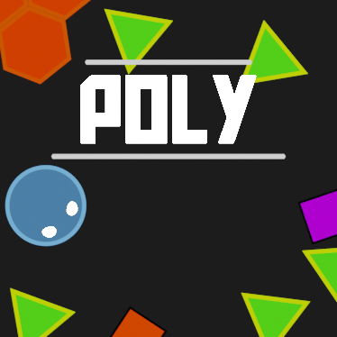
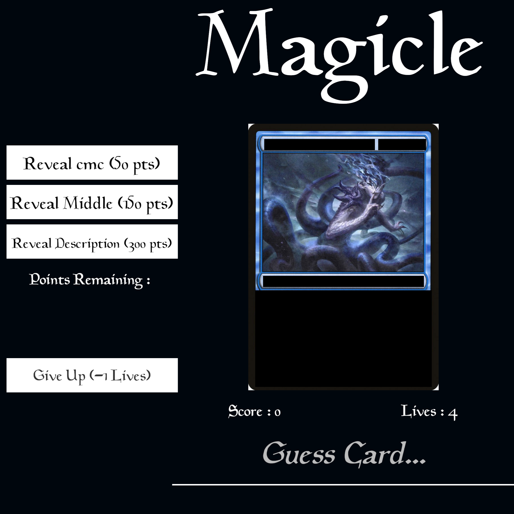
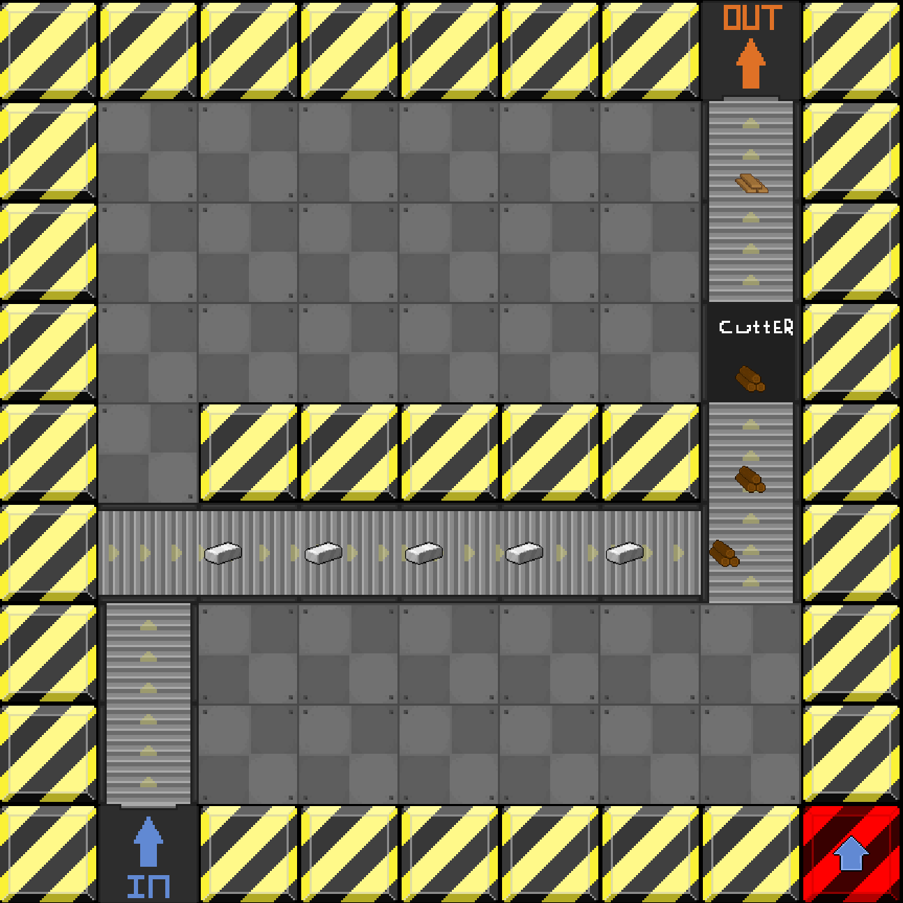

Joe Rickwood
Poly
Poly is a top down action packed 2D shooter roguelike, shoot your way through hundreds of powerful shapes and collect heaps of items to turn you into a killing machine!
With 70+ Unique Items To Collect And Unlock, There Are Millions Of Combinations To Keep You Coming Back For More!

 Dex's Diner
Dex's Diner is a single player deck-builder where players lead an army of waffles against the local health food chain's vegetables.
Create and cook your waffles, put an assortment of toppings on them, and lead them to victory!
Dex's Diner
Dex's Diner is a single player deck-builder where players lead an army of waffles against the local health food chain's vegetables.
Create and cook your waffles, put an assortment of toppings on them, and lead them to victory!
Magicle
Magicle was my attempt on converting the idea of Wordle to a Magic The Gathering Equivilent
You gain more points by using less information to solve what card is hidden


Factory Project
Gain score by producing items using factory machines!
Move items with conveyers, turn planks into wood, steel ingots into plates, and hire powerful foreman to level up your score!
This game was made WITHOUT a game engine using the SFML framework